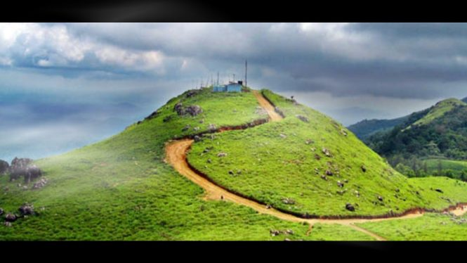
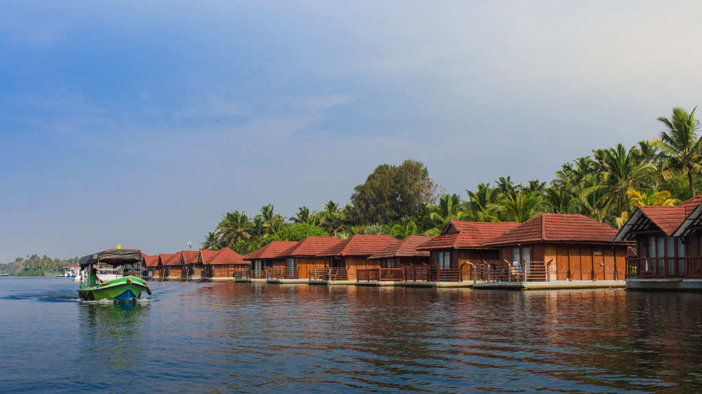

Tourism Hotspots Of Thiruvananthapuram
Agasthyamala

Agasthyamala , designated by the UN as one of the biodiversity hotspots in the world, is a true trekker’s delight in the Trivandrum region. Located in close proximity to Neyyar wildlife sanctuary, Agasthyamala is a major jewel in the Western Ghats region. Also known as Agasthyarkoodam, Agasthyamala is rich with biodiverse flora and a plenty of medicinal plants. Agasthyamala from a tourism perspective holds to major significance. One, religious importance and second are its trekking routes. Agasthyamala gets its name from one of the most popular sages in the south, Sage Agasthya, who supposedly resided in these parts.
PONMUDI
As dusk dawns on these thick lush green parts of the Western Ghats, the Varayadumotta peak of the Ponmudi range is enlightened with a golden aura, which paints the entire valley in its vibrancy. Hence, the alias of the peak is the “Golden Peak.” Ponmudi is an absolute local favourite and often the spot for a weekend gateway to the residents of Trivandrum. Located 55.2 Km North-East of the city, in Nedumangad taluk of Thiruvananthapuram, Ponmudi stands at an altitude of 1100 meters and runs parallel to the Arabian Sea. Ponmudi in itself is diversely characterized with several tourist attractions like green landscapes, coffee plantations, trekking and hiking routes, camping sites, long drive opportunities, elevated peaks, calm valleys, a variety of flora and fauna exhibits and exhilarating waterfalls. The drive to Ponmudi is in itself an enriching experience.
POOVAR ISLAND
Located at a distance of around 35 km from Trivandrum and 20 km from Kovalam, Poovar Island is a tiny coastal fishermen village. The island lies in River Neyyar, which flows from Agastyarkoodam Hills and ends at the Arabian Sea. The island has a few resorts, offering a memorable stay to its guests. Poovar Lake, the backwater river and the Arabian Sea are the prime attractions of Poovar Island. The serene Poovar beach starts at the point that marks the end of backwater. The beach is ideal for yoga, meditation and relaxation.